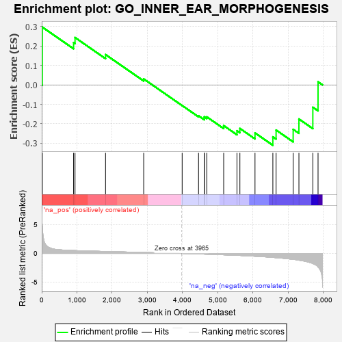
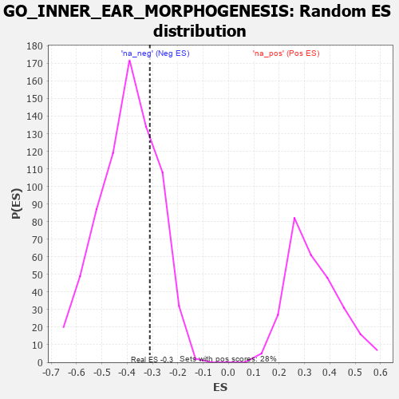

| | | Dataset | 7d |
| Phenotype | NoPhenotypeAvailable |
| Upregulated in class | na_neg |
| GeneSet | GO_INNER_EAR_MORPHOGENESIS |
| Enrichment Score (ES) | -0.31074196 |
| Normalized Enrichment Score (NES) | -0.7831241 |
| Nominal p-value | 0.7538036 |
| FDR q-value | 0.998731 |
| FWER p-Value | 1.0 |
Table: GSEA Results Summary

Fig 1: Enrichment plot: GO_INNER_EAR_MORPHOGENESIS
Profile of the Running ES Score & Positions of GeneSet Members on the Rank Ordered List
| PROBE | GENE SYMBOL | GENE_TITLE | RANK IN GENE LIST | RANK METRIC SCORE | RUNNING ES | CORE ENRICHMENT | | 1 | HMX3 | | | 17 | 4.775 | 0.2977 | Yes |
| 2 | STOX1 | | | 905 | 0.506 | 0.2179 | No |
| 3 | LRIG1 | | | 946 | 0.497 | 0.2441 | No |
| 4 | ABR | | | 1812 | 0.335 | 0.1563 | No |
| 5 | FGFR2 | | | 2895 | 0.167 | 0.0308 | No |
| 6 | EYA1 | | | 3987 | -0.006 | -0.1061 | No |
| 7 | KCNQ4 | | | 4452 | -0.085 | -0.1591 | No |
| 8 | GATA3 | | | 4614 | -0.120 | -0.1718 | No |
| 9 | ATOH1 | | | 4615 | -0.121 | -0.1642 | No |
| 10 | PTK7 | | | 4687 | -0.136 | -0.1645 | No |
| 11 | TBX1 | | | 5166 | -0.241 | -0.2095 | No |
| 12 | FGFR1 | | | 5543 | -0.332 | -0.2360 | No |
| 13 | ROR2 | | | 5626 | -0.353 | -0.2242 | No |
| 14 | LRIG3 | | | 6055 | -0.492 | -0.2471 | No |
| 15 | OTOP1 | | | 6562 | -0.690 | -0.2674 | No |
| 16 | USH1G | | | 6654 | -0.740 | -0.2324 | No |
| 17 | WHRN | | | 7139 | -1.025 | -0.2289 | No |
| 18 | MYO7A | | | 7302 | -1.175 | -0.1755 | No |
| 19 | MYO6 | | | 7697 | -1.753 | -0.1150 | No |
| 20 | DLX5 | | | 7845 | -2.378 | 0.0158 | No |
Table: GSEA details [plain text format]

Fig 2: GO_INNER_EAR_MORPHOGENESIS: Random ES distribution
Gene set null distribution of ES for GO_INNER_EAR_MORPHOGENESIS